| 日付 | 2012年5月5日（土） |
|---|---|
| 山域 | 西上州 |
| メンバー | 家族（妻、長女・1歳） |
| 山行形態 | 子連れ日帰り |
| アクセス | 車 |
| ルート (Map) | 天狗岩登山口→天狗岩→シラケ山→尾根コース→烏帽子岳→巻き道コース→天狗岩登山口 |
GWの後半は天気が今一つだが、本日は晴予報。
ちょうどアカヤシオの咲く季節なので、アカヤシオの咲く西上州の山に行ってみる。
2年前に笠丸山に行ったときは、時期が早すぎて全く咲いていなかったため
今回はそのリベンジだ。
8:03 天狗岩登山口到着。標高870m。
早い時間に着いたのに駐車場はいっぱいで、すでに道路にも何台か車が停まっている。
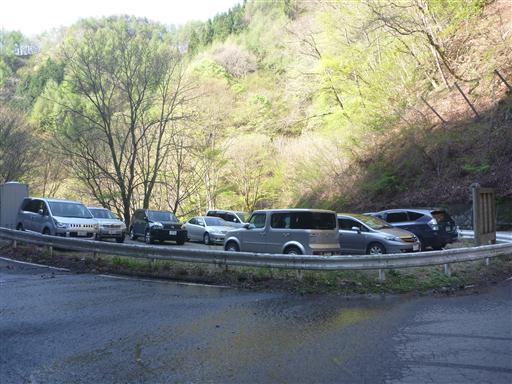
道路の脇に車を停めて、登山道に入っていく。
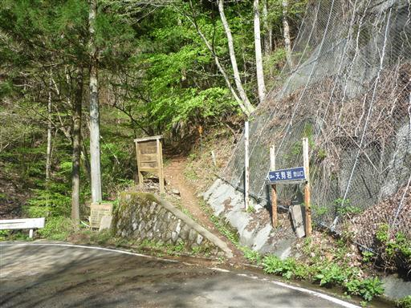
新緑の美しい沢沿いの道を登っていく。
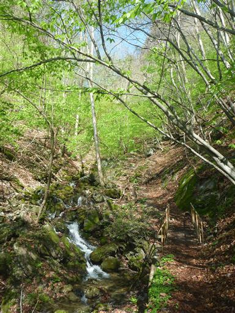
ニリンソウが咲いている。花期にはまだ少し早いがポツリポツリと咲いている。
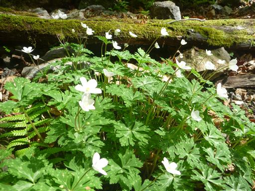
ワチガイソウの花も咲いている。
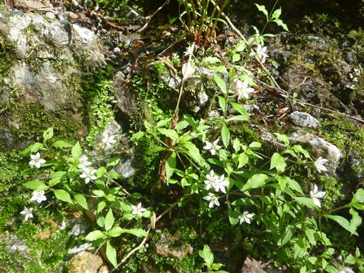
分岐点に到着。天狗岩方面と巻き道コースに分かれる。
行きは天狗岩を経由して行くことにする。
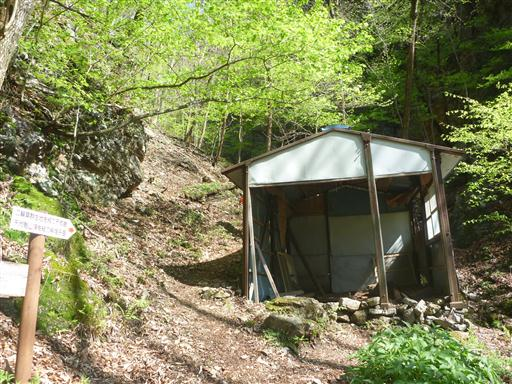
しばらく歩くと水場が現れる。少し飲んでみたがあまり冷たくない。

天狗岩に近づくとアカヤシオの花が見えてくる。何度眺めてもこの花は美しい。
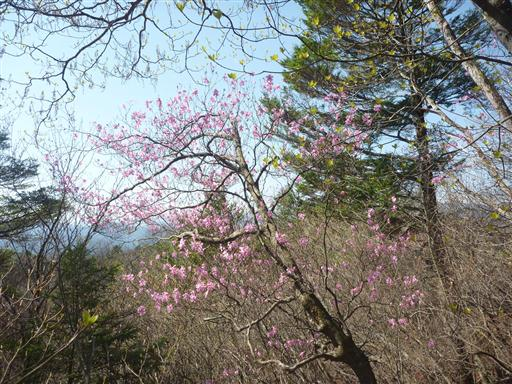
8:58 天狗岩に到着。狭い山頂だ。
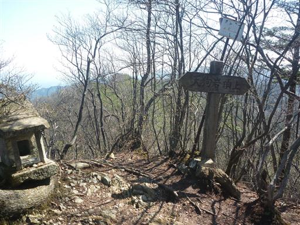
天狗岩からは北方の展望が開ける。
ぎざぎざの稜線を持っているのは妙義山、その手前は鹿岳だ。
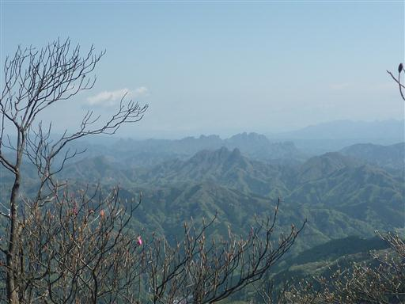
天狗岩のすぐそばには天狗岩展望台が設けられている。
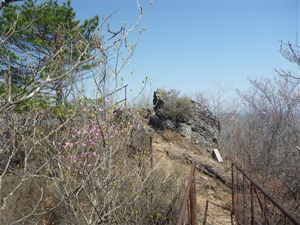
荒船山や毛無岩などの西上州の山々が望める。背後に見えているのは浅間山だ。
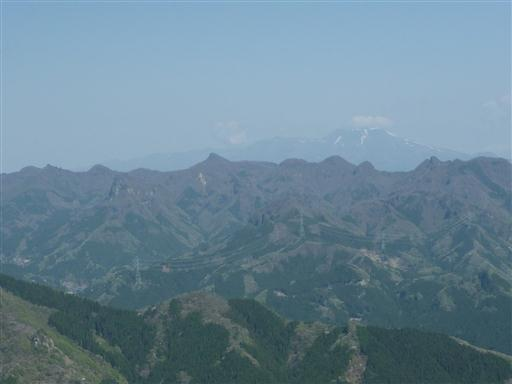
目の前には岩峰が聳えている。西上州らしい景観だ。
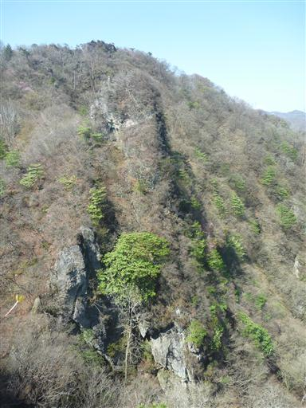
天狗岩を後にし、少し下ると尾根道コースと巻き道コースの分岐点が現れる。
尾根道コースは少々難易度が高いが、展望が良いのでこちらを選択する。
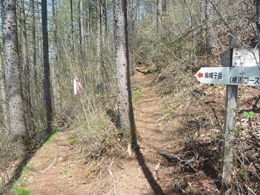
痩せた岩尾根が始まる。右側は切れ落ちた岩壁だ。
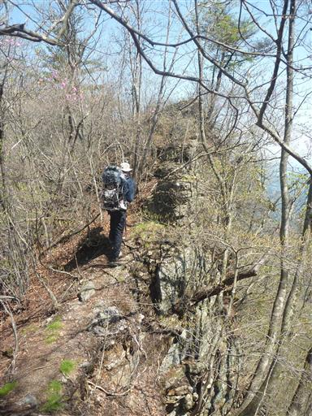
このルートはいくつかのピークを越えて行く。
目の前にはアカヤシオが点々と咲く岩尾根が続いている。
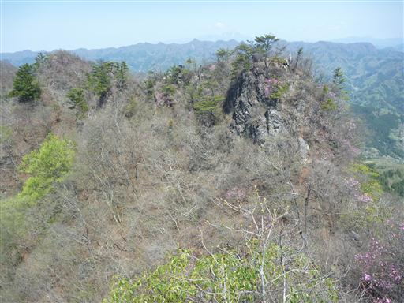
ここから登山道は急降下。足を滑らさないよう慎重に下る。
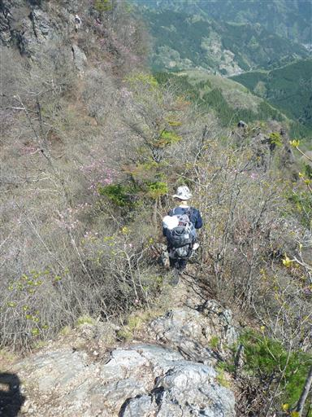
決して難しい道ではないのだが、道が細く両側の枝がうっとうしい。
子供を背負っていると枝をよけて歩かなければならず、それが結構疲れる。
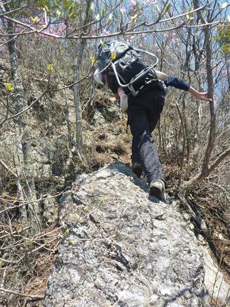
細かなアップダウンを繰り返しながら、痩せ尾根の登山道は続く。
すれ違った人の話によると、今がアカヤシオの最盛期らしいが、
今年は外れ年らしく、昨年に比べるとアカヤシオの数が少ないとのことだ。

目の前に烏帽子岳が見えてきた。標高は低いが烏帽子の形をした見事な岩峰だ。
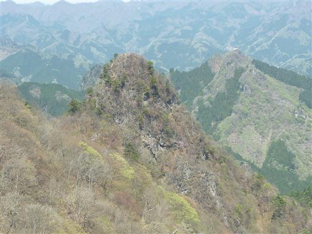
眼下は新緑に包まれていて美しい。
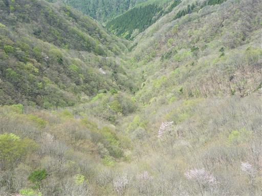
急な坂を登りきると巻き道コースと合流する。
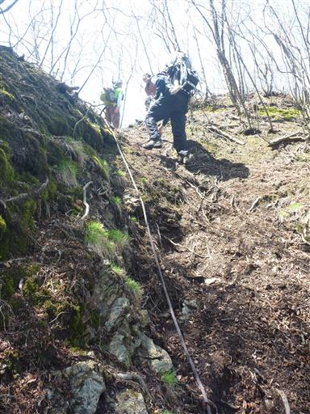
マルと呼ばれるピークはスキップしてトラバース道を行く。
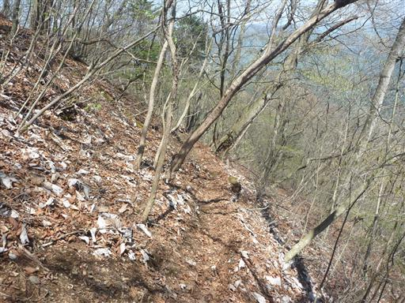
烏帽子岳直下からは急斜面を登る。
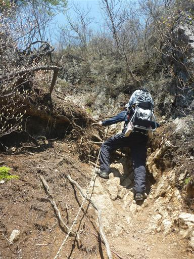
10:39 烏帽子岳山頂到着。標高1182m。
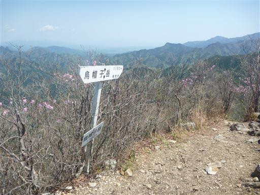
アカヤシオの咲く季節、狭い山頂は大勢の登山者で賑わっている。
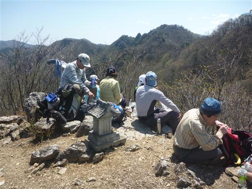
山頂からの展望。西上州の山々が見渡せる。
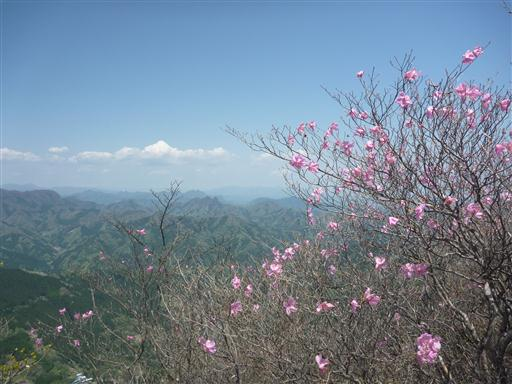
すぐ隣にはここより標高の高いピークが聳えている。
斜面にはアカヤシオが点々と咲いている。
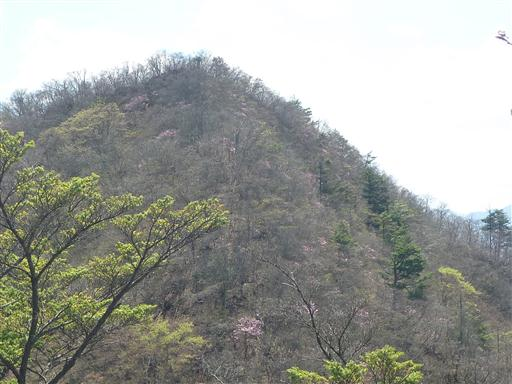
帰りはそのピークに立ち寄ることにする。
斜面に生える草が緑の滝のように見える。
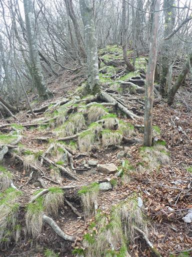
マル山頂に到着。展望がない平凡なピークだ。
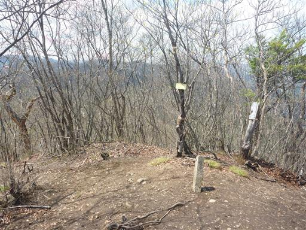
帰りは巻き道コースを歩くことにする。
アップダウンがないので、こちらの方がはるかに時間を短縮できる。
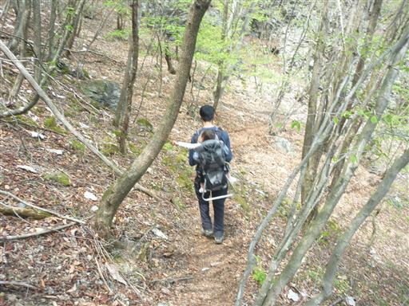
足元に咲くエイザンスミレ。この山ではエイザンスミレをよく見かける。
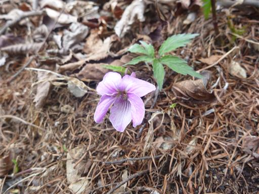
おこもり岩に立ち寄る。大きな岩窟に祠が祀られている。
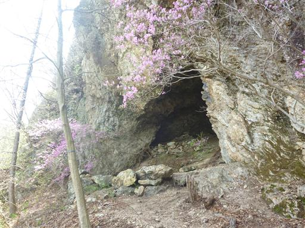
この辺りの岩壁は見事だ。尾根コースはこの上につけられている。
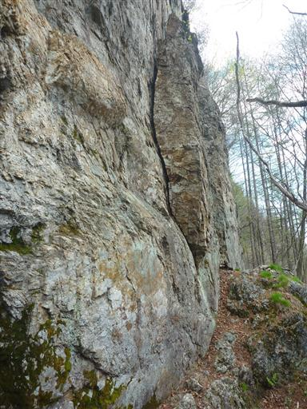
尾根コースと合流し、あとは元来た沢沿いの道を下って行く。
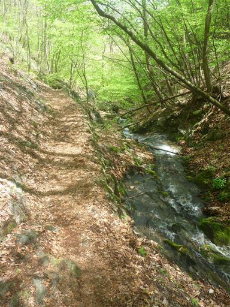
13:20 天狗岩登山口到着。
アカヤシオの数は多くなかったが、花を愛でながら岩稜を歩ける名コースだった。
またアカヤシオの咲く季節に、お隣の三ツ岩岳にでも訪れてみようと思う。
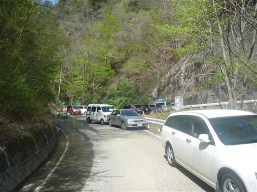